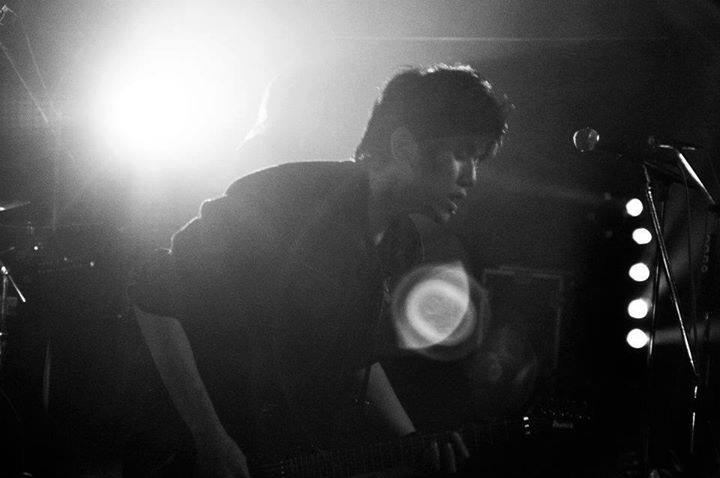
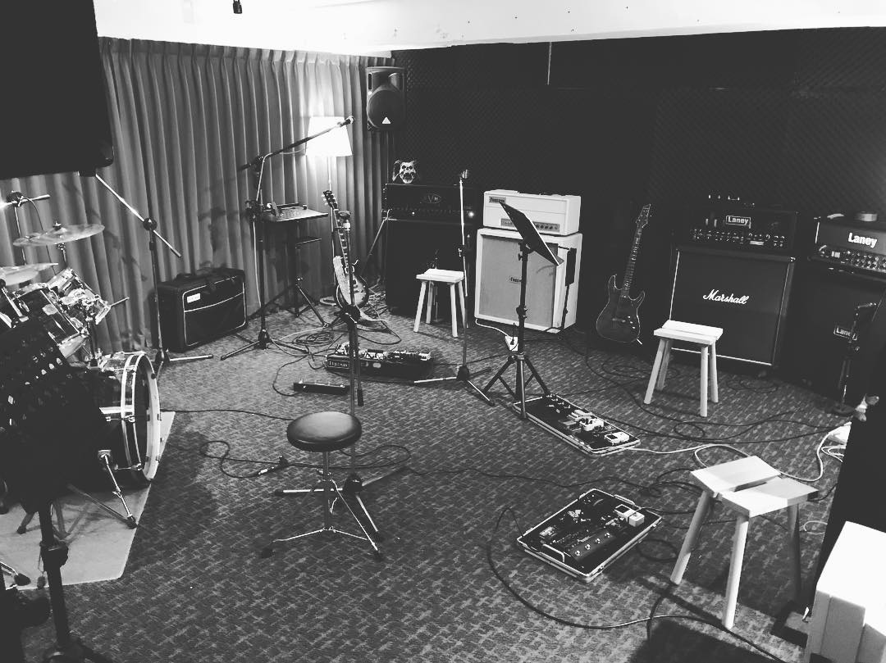

Blu Jv1.7
Between lines of code and waves of sound, I am weaving a digital soul.

Reflections
Between music, AI, and words, I am still searching...

Soundscape
Guitar, composition...
0:00
50%
🎵 Gunpowder - Prologue ...